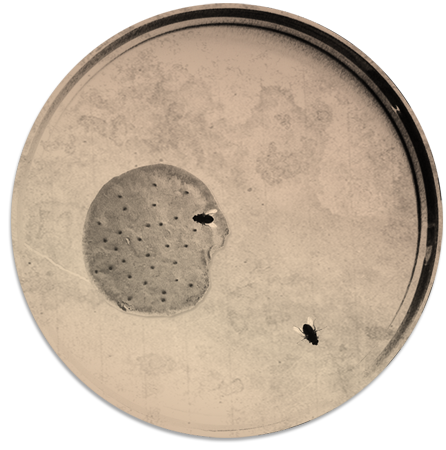

After two months of this, out of the blue, the soldiers in Camp A, started selecting women and girls to be moved to Camp B. More than 8,000 were chosen and yet more were left in Camp A. The soldiers didn't care who was related to who, or what each of the women wanted and Anne and her sister Margot were separated from their mother Edith, who was left in Camp A.
Anne and Edith travelled on a train hundreds of miles with hundreds of other girls and women from Camp A to Camp B. They had no idea why they were chosen or where they were going. They were hungry, sick and dirty, having not had any proper food or showers at the camp. They had not seen their father for months and were now separated from their mother. It was hard to remain hopeful about the future but they had to.
At Camp B, they were housed in large tents, that were even colder than the sleeping halls they had to sleep in in Camp A. They were crammed in together and disease was now a real danger.